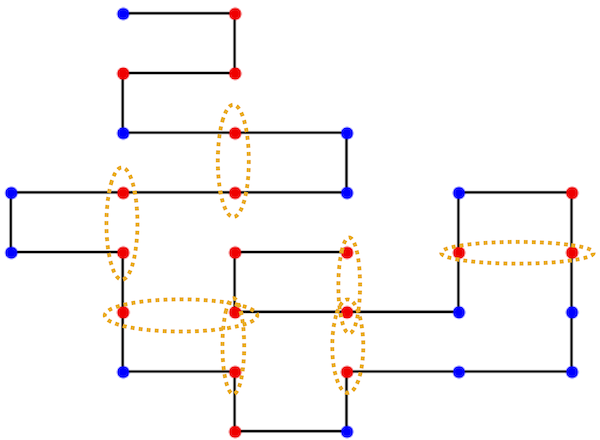

Protein Folding#
Extra Credit
This page is 10 points extra credit
References: https://en.wikipedia.org/wiki/Hydrophobic-polar_protein_folding_model
In this section, we would like to do simulated annealing on protein folding. A protein has 20 different amino acids. A reasonable minimal model is to simplify this by assuming that there are only two types of amino acids:
H <– a hydrophobic amino acid
P <– a hydrophillic amino acid
It turns out that this is the most fundamental physics driving the protein folding: whether the amino acid is hydrophobic or hydrophillic. The hydrophobic amino acids try to be near other hydrophobic amino acids (and therefore implicitly not near the water).
The sequence for a protein might be a sequence like this:
phhhphpphhpphhphhphppphhphphhhp
We are going to imagine that our protein folds on a square grid. Here is an example of the above folded protein with orange circles around the nearest-neighbor hydrophobic amino acids.

We will assign an energy to each folded protein:
each hydrophobic amino acid that is near each other but not connected (i.e. the orange circles) contributes an energy of -1
every amino acid which is on top of each other (none in the image above) contribute 300 to the energy. This is essentially just to forbid the protein from folding in such a way that the amino acids are on top of each other but making the energy large.
The energy of the protein above is -7.
To describe the folding of the protein we can imagine that we start at the upper left of the picture above and then describe whether we are going to go right, left, or forward. Notice that the first bond goes right. Then the second and third bond makes a right turn and the fourth bond makes a left turn. This lets us describe the state of a folded protein by a string of r,l, and f. For example, the folded protein above corresponds to the following string:
rrrllfrrffllrflrllrflffllfrfrr
To write a simulated annealing program, we will need two ancillary functions:
StateToCoords(state)which takes a state (i.e.rrrllf...) and returns the coordinates. I found that the easiest way to do this is to first convert it to absolute directions (i.e.rdldrrdllldrddrdrurruuulddllurfor the above protein) and then to the coordinates. Once you have this, then you should be able to draw it easily (write aDrawMe(protein,coords)function).Energy(coords,protein)which takes the coords and the protein and returns the energy.
Go ahead and write these two functions.
Grading
Write and use these functions on the protein with the folding sequence above. Go ahead and also draw it. Show that you get an energy of -7 and a folded protein that looks like above.
Now we would like to minimize the energy of a protein using simulated annealing. To do this, you can write an markov chain (like the Ising model) which samples a folded protein sequence \(f\) with probability proportional to \(\exp[-\beta Ef)]\).
To change your configuration (the equivalent of a spin-flip) is to pick a site and then randomly choose r,l, or f for that site.
Once you have a working markov chain, do simulated annealing by picking a temperature schedule and try to generate the folding sequence to minimize the energy.
Grading
Perform simulated annealing on the following proteins:
phhhpphhphpphpphhhhpphhhhppphhp
ppphphpppphpphppphpphhhppphphpp
Plot your energy as a function of \(\beta\) (the final energy at each \(\beta\) you use.
Report the lowest energy you find and plot the final proteins.
We find energies of
-38
-8
Can you match or get lower then our energies?
Extra Credit :class: tip
5 points extra credit
Here is a challenging and much longer protein to fold:
hphhpppphhhhhhhhphpphpphphhpppppphhhpppphhppppphppphhphhhpppppphphhphphhphhhphphhphphhhhhphphhpphhhhhpphhphphphhhpphpphppphpphhhhppphhpppphpphhhphhphhpphhphhhphphpphpphphhpphhhphphppppphhphpphphphhhppppphhhpphphpphhhphhhphhhhpphpphphpppphhphhhhphpphpphhphppphhpphhphhhphpphphhphhpphhhhphhpphhhhpphhphhhhppphppppppphphhhhhpphphhphhppppphhhhphphhhppppphpppphphpphhppphhphhhhphpphhphhhphpppphphphpphhhhphhhhphphhphhppphhphphhphphphhhhphppphphphpphpphhphhphppphhphhhphpppphphphhhphhppphphpppppphhpphhhpphphhhhhphhphphphhphpphhhhphphhpphphppphhphhhhphpppphhhpphhpphppphhhhphhppphhhppphhhphphhhhphpppphpphhphhpphhppppphhhhhpphpphphphphphphphpphhppppphhppphhhppppphpphphhhhhppphhppppppppphhpphhphpppphhhhhhhhphhhpphphhhhhphhphpphppphhphhhhhphhhpphhpphhphppphphhhhhhhpphpphhphppphpphhpphphpppphphhppphpppphhhphhhphppphpphhhhpppphpppppppphhphpppppphppppphpphpphhppphphppphhphppphphhphhphpppphhhpphpphhphppphpphppphhphhhhhpppphhphphhhphphppphphhhpphhphhhhhphphppphhhpphhphhhphhhphpphphppppphhphphhhhphhpphphpphh
The energy we get is -682
You get the 5 points if you get within 10% of our energy (or better!)
Report your energy, a matshow of your fold, and the folding sequence in your document.